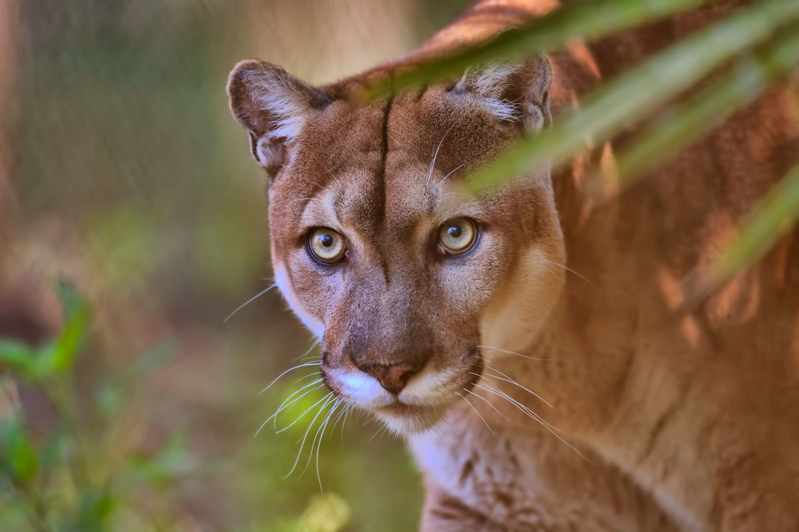
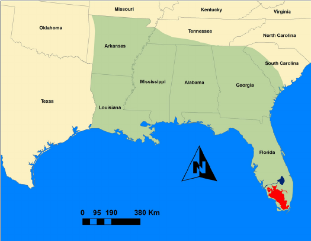
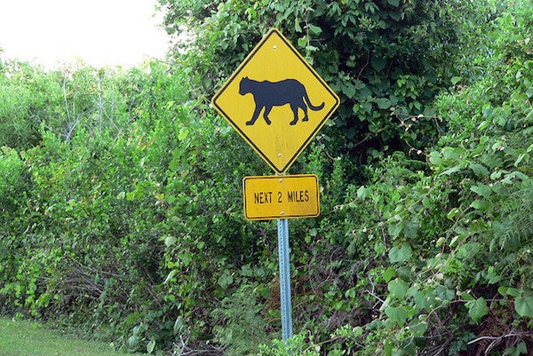

The Florida Panther is part of the puma concolor family and is a subspecies of cougar. These big cats, getting up to 150lbs and 7 feet in length, are born with spots on their fur that fade as they grow older. Most of their days are spent hunting for both small mammals like rabbits and mice and even large animals like wild pigs or alligators, whom are the only know natural predator of the Florida Panther. Very seldomly seen, there's only 70 total confirmed sightings from 2004 to 2018 as seen in the map on the right.
 Image from at britannicaHistorically, these mammals used to occupy much of the southeast region of the United States all the way from the lower areas of Florida to Louisiana and the states in between. From grasslands to swamps, areas where they roamed were open and allowed for them to be social, reproduce, and hunt prey- which played an important role to habitat selection.
Today, only a small region on the southwestern tip of Florida acts as a home, less than 5% of the space that they used to live in. 
Rapid urbanization has been a major threat to the Florida Panther population and caused the species to be added to the endangered species list in 1973. From 500 individuals in 1900, the population had dwindled down to 12-20 adults. There are estimated to be between 120 and 130 Florida Panther left, making them one of the world's most endangered species.
Land use planning with accommodations for the Florida Panther become more uncommon as residential development, road construction, conversion to agriculture, and mining continue to take over. The United States Fish and Wildlife Service hope to see 3 populations of at least 240 individuals before the species will be delisted.
Although it isn't often for humans to come in contact with the animals, the mortality of Florida Panthers can be attributed much to vehicles. And in addition, humans threaten the lives of these big cats through poaching, habitat loss from construction, and pollution. Year after year a significant portion of the population is killed, making it difficult to maintain genetic diversity and overall population growth. 
The conservation of Florida's forests and swamps plays a vital role in keeping this species alive. Since the Florida Panther was placed on the endangered species list, there have been a few conservation programs established to keep this species around including the construction of wildlife crossings or bridges to allow animals to safely cross busy roads
In 1989, the Florida Panther National Wildlife Refuge was established as a means to protect the Florida Panther. To limit public encounters with the big cats, only a few hiking trails pass through the refuge which contains both private and public land. As these animals need up to 200 square miles of territory, they have been afforded 26,400 acres in Everglades National Park, Big Cypress National Preserve, and Fakahatchee Strand State Preserve.